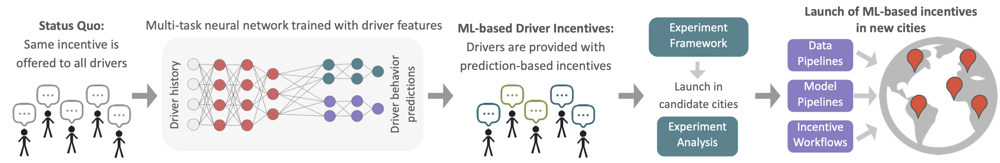
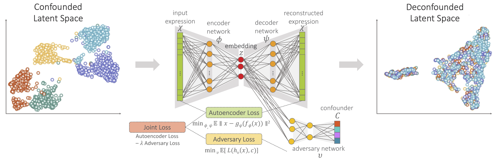
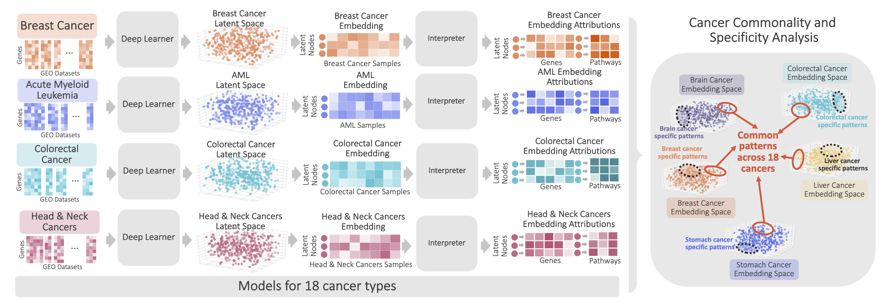
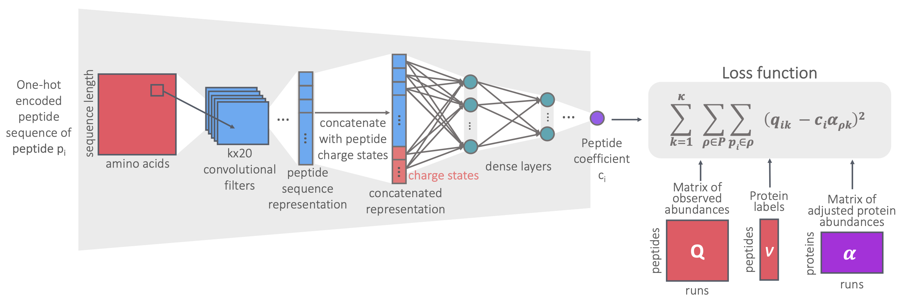

I am a Senior AI/ML Engineer at Insider, working on applied R&D for LLM- and retrieval-powered AI agents. I currently contribute to AgentOne, Insider’s AI-driven support and shopping agent platform, focusing on grounding, retrieval quality, personalization, and evaluation for production agent workflows.
Previously, I was a Senior Machine Learning Engineer at Uber Technologies on the Marketplace team, combining applied ML research and engineering on large-scale forecasting and recommendation systems, spanning experimentation, production deployment, and monitoring.
I received my Ph.D. in Computer Science from the University of Washington, Paul G. Allen School of Computer Science & Engineering in 2022, advised by Prof. William Stafford Noble and Prof. Su-In Lee. My research focused on representation learning and deep learning methods for biomedical data.
Contact: bercestedincer at gmail.com
Developed deep multitask neural network models to provide drivers with customized incentives, significantly improving overall incentive efficiency. Led the project through ideation to deployment, including model formulation, experimentation, launch, and long-term maintenance of production models and data pipelines.

Developed an unsupervised deep learning approach for learning deconfounded embeddings and improved cancer subtype classification across different data domains.
Dincer, A. B., Janizek, J. D., & Lee, S. I. (2020). Adversarial Deconfounding Autoencoder for learning robust gene expression embeddings. Bioinformatics, 36(Supplement 2), i573–i582. (Paper) | Contributed talk at ISMB MLCSB 2020. (Talk)

Collected and integrated gene expression measurements from 1,098 datasets and 18 cancer types and increased the robustness of variational autoencoders (VAEs) by designing an ensemble learning pipeline.
Qiu, W., Dincer, A. B., Janizek, J. D., Celik, S., Pittet, M., Naxerova, K., & Lee, S. I. Deep profiling of gene expression across 18 human cancers. Nat. Biomed. Eng. 9, 333–355 (2025). (Paper) | Spotlight talk at Machine Learning in Computational Biology (MLCB) 2019.

Developed a convolutional neural network (CNN) model to predict multiplicative noise coefficients from sequences, which reduced protein quantification noise and outperformed alternative models.
Dincer, A. B., Lu, Y. Y., Schweppe, D. K., Oh, S. & Noble, W. S. (2022). Reducing Peptide Sequence Bias in Quantitative Mass Spectrometry Data with Machine Learning. J Proteome Res., 21(7), 1771-1782. (Paper) | Contributed talk at ASMS 2021 and ISMB/ECCB 2021 (best presentation award).
